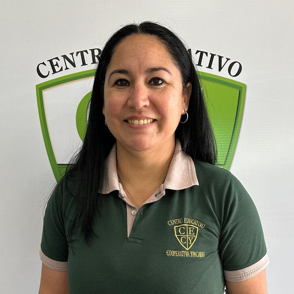
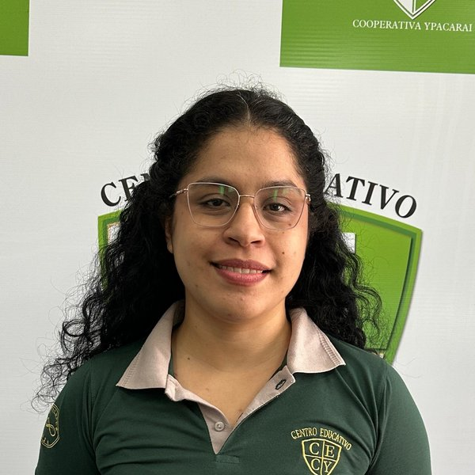
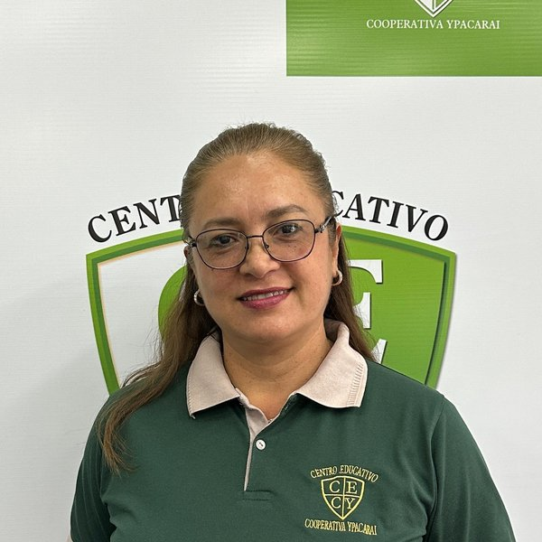
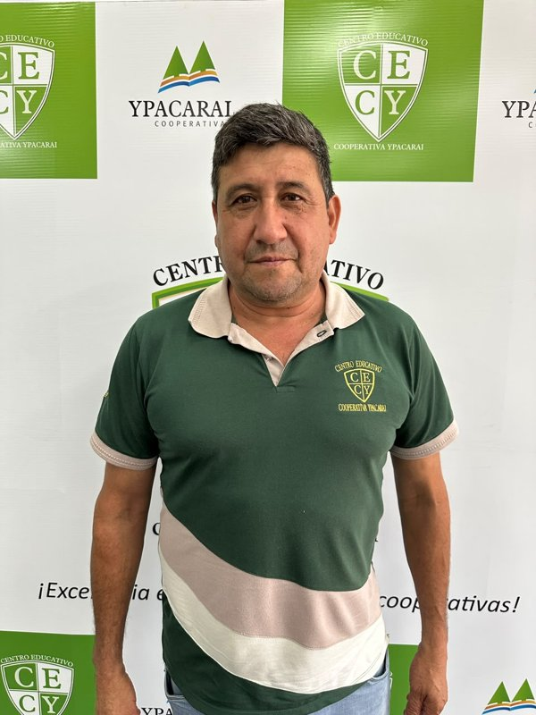

😕 No se encontró ningún integrante con esos criterios.
Probá con otro nombre, apellido, cargo o área.
Directora
"La educación transforma vidas."
Psicopedagogo
"Aprender también es acompañar."
Psicóloga
"Cuidar la mente es educar."
Profesor Guía
"El éxito es constancia."
Coordinadora
"Educación con liderazgo."

Secretaria
"Organización y compromiso."
Secretaria Asistente
"Siempre al servicio."

Jardín Ayudante
"Aprender jugando."

Preescolar Ayudante
"Cada niño es único."
Pre escolar
"Aprender es parte de crecer"

Inicial
"El inicio del camino hacia el aprendizaje."

Ayudante 2° Grado
"Educar con paciencia."
1° Grado
"Educando para el futuro."

2° Grado
"Inspirando estudiantes."
3° Grado
"Aprender es crecer."
4° Grado
"La educación abre caminos."
5° Grado
"La educación inspira."

6° Grado
"Siempre aprendiendo."

Aula Apoyo
"Educar con pasión."
Informática - Nivel Medio
"El futuro es digital."
Física y Química
"Transformando el esfuerzo en éxito."

Liderazgo y Servicio Social Ética
"Liderar es servir con integridad."

Lengua y Literatura Castellana
"El poder de la palabra escrita."

Trabajo y Tecnología 9° Grado
"Habilidades prácticas para el mundo real."
Trabajo y Tecnología 7° y 8° Grado
"Transformando ideas en proyectos reales."

Historia y Geografía 3° Ciclo
"Explorando las huellas de la humanidad."

Proyecto, Historia, Geografía y Economía
"Comprendiendo el pasado para proyectar el futuro."

Matemática Plan Común y Aplicada
"Resolviendo problemas y descubriendo patrones."

Matemática Plan Común
"La matemática conecta todas las disciplinas."

Administración de Empresas
"Transformando ideas en negocios sostenibles."

Inglés 1° Año
"Abriendo puertas al mundo."
Hardware - Nivel Medio
"Conectando tecnología con soluciones reales."
Inglés
"Aprender idiomas abre puertas."
Matemática
"La lógica es poder."

Manualidades
"Construyendo futuro."
Artes
"Creando mundos a través del color."
Educación Física
"Mente sana, cuerpo sano."

Guaraní
"Ñamombarete ñane ñe'ẽ."
Ciencias Naturales y Salud
"Comprendiendo la vida para cuidar el bienestar."

Informática
"Diseñando el futuro digital bit a bit."

Limpieza
"Un ambiente limpio es salud."

Portería
"Seguridad primero."
Limpieza
"El orden y la higiene son bienestar."